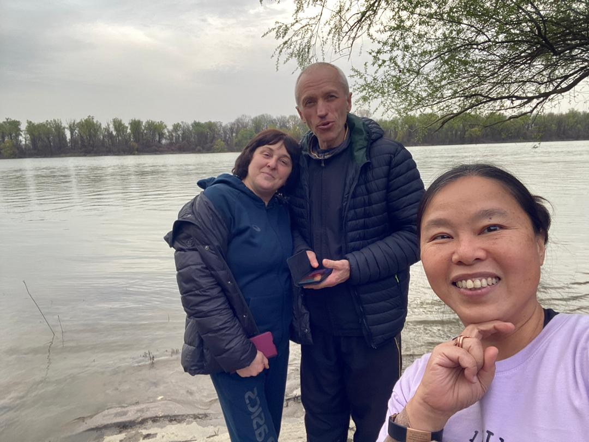

Real Story · 中文
在 Ruse 的多瑙河边，遇见一对夫妻。
27 March 2024，我来到 Ruse, Bulgaria。 在多瑙河边，我遇上了一对夫妻： 妻子来自 Bulgaria，丈夫来自 Ukraine。
我们交谈了好一阵。 这种旅途中突然出现的 conversation， 不一定会留下很多文字， 但会留下一个很清楚的感觉： 原来在河边，也会有人愿意停下来聊一聊。

The Blue River Night
那一晚，我 alone overnight by the Ruse river.
那天晚上，我 alone overnight by the Ruse river。 中文常常说“蓝色多瑙河”，所以来到这里的时候， 这个名字不只是地理，也像一条从书本、音乐和旅途里流出来的河。
但是真正站在河边时，它不是 tourist postcard。 它是冷的空气、安静的水面、远处的城市， 还有 Toyotaki 停在附近，陪我过夜。
English Memory Summary
A river, a conversation, and a night alone.
On 27 March 2024, Tuzi reached Ruse, Bulgaria, and spent time by the Danube River. There, she met a couple — a Bulgarian wife and a Ukrainian husband — and spoke with them for quite a while.
That night, she overnighted alone by the river. The Danube was not only a famous name from songs or maps; it became a real road memory: quiet water, evening air, and Toyotaki waiting nearby.
Heart Statement
有些河流不是为了让你跨过去，而是让你停下来。
The Danube did not ask me to rush. It gave me a conversation, a quiet night, and one more place where the road became human.